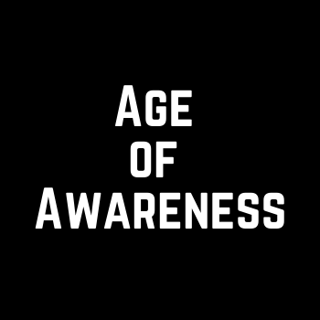

Barack Obama
What I’m Reading on the Rise of Artificial Intelligence
Earlier this week, President Biden issued an executive order on artificial intelligence — a breakthrough technology that has the power to change the world in ways we’re only beginning to understand...

Ashley Mayer
We need more women founders on offense
I read Glossy: Ambition, Beauty, and the Inside Story of Emily Weiss’s Glossier in one sitting, as soon as it was published. This wasn’t a casual read. I had previously run communications at Glossier...

Amy Widdowson in The Morning Missive
Matthew Perry Wanted To Help People Get Sober, Even When He Couldn’t.
Matthew Perry died on Saturday. And when I found out late Saturday, I started to cry. There are a few reasons why I particularly liked this man I’d never met. One, Friends was on TV during my formative...
David Bowles
Tomicca: Our Departed on the Day of the Dead
Without getting into just how much Día de Muertos or Day of the Dead in Mexico is Indigenous or syncretic, I wanted to share some basic (mostly linguistic) information about similarly-named holidays among...
Carlos Arguelles
How I scaled Amazon’s Load Generator to run on 1000s of machines
July 10, 2019. As Taylor Swift was giving her very first live performance of “You Need To Calm Down” at the New York’s Hammerstein Ballroom, I was nothing but calm. This was being livestreamed to all 200...

Ellen Eastwood
Matthew Perry and My Brother Share the Legacy of Helping Destigmatize Addiction
Like many people, I was gutted when I heard about actor Matthew Perry’s death on Saturday night. Of all my parasocial relationships, this was one of the longest and deepest. Like many people, I was gutted...


Discovered Medium writers you already follow on Twitter.
Maybe Later
Reccommended Topics
Who to follow
Carlos Arguelles
Law professor, activist.
Ellen Eastwood
Law professor, activist.
Ashley Mayer
Law professor, activist.
Recently saved
Eva Keifennheim in Age of Awarennes
The Feynman Technique Will Make You Remember What You Read
Oct 30, 2020· 5 min readSee all